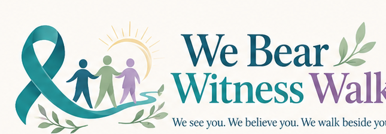

We Bear Witness Walk
A survivor-centered community rally and awareness walk bringing together advocates, counselors, victim services, legal resources, medical support, allies, and the Boerne community.
Proposed: Saturday, April 24, 2027 • Boerne, Texas
Main Plaza proposed — final event details pending City approval.

You do not have to tell your story for us to stand beside you.
The We Bear Witness Walk exists to stand beside survivors of sexual violence—not to ask them to relive what happened. Survivors never have to identify themselves, speak publicly, disclose their experience, or participate in media to belong here. You may attend quietly, bring someone you trust, use resources, walk, sit, or leave whenever you need.
Why We Bear Witness
Sexual violence often leaves people carrying experiences others may never see. Some survivors speak openly. Some tell one trusted person. Some never tell anyone. Some are still deciding what words to use. Every survivor deserves support.
We Bear Witness Walk was created to build a community where survivors can access advocacy, counseling, medical support, legal information, victim services, and connection without having to prove their pain first.
Our mission is not to speak for survivors. It is to listen when they choose to speak, respect silence when they do not, and make sure they know they do not have to walk alone.
The Walk
Date
Saturday, April 24, 2027
Location
Main Plaza, Boerne, Texas
Time
11:00 AM–2:00 PM
Resource fair planned around 10:30 AM.
The day is planned to include a community rally, survivor-centered speakers, a resource village, Quiet Support Area, medical support, and a peaceful awareness walk through downtown Boerne.
What to Expect
The Rally
Survivor-centered speakers, education, and community solidarity.
The Walk
A peaceful awareness walk through downtown Boerne, subject to route approval.
Resource Village
Survivor-service organizations, victim advocates, legal resources, counselors, and community services.
Quiet Support Area
A calm, low-stimulation space with qualified mental-health professionals and trained advocates as available.
Medical Support
A designated first-aid and medical-support area.
Community & Connection
Music, reflection, resources, conversation, and opportunities for allies to learn how to support survivors.
If You Are a Survivor
This event asks nothing from you. You do not have to wear a ribbon, carry a sign, walk, speak, or tell anyone why you came. You may attend the rally, visit resources, sit quietly, use the Quiet Support Area, walk with us, bring someone you trust, or leave whenever you need. Your participation belongs to you.
If You Are an Ally
You do not need to have experienced sexual violence to participate. Come to listen, learn, support, understand resources, and help create a safer community. Walk beside survivors—not ahead of them and not speaking over them.
You deserve support whether or not you attend the walk.
You never have to identify yourself as a survivor to deserve help, information, or care.
RAINN National Sexual Assault Hotline
If you are in immediate danger or experiencing a medical emergency, call 911.
Confirmed local partners and additional resources will be added here as partnerships are finalized.
Partners
We are building this event alongside survivor-service professionals, counselors, advocates, legal resources, medical support, community organizations, faith communities, and local businesses.
Get Involved
Volunteer
Choose the role—or roles—that fit you best. We have options for welcoming, setup, route support, accessibility, privacy, hospitality, and more.
Become a Partner
Survivor-service, counseling, legal, medical, faith, community, and professional organizations are welcome to inquire.
Sponsor
Businesses can support the event through financial sponsorship or in-kind goods and services. No tax-deductibility is implied unless a qualifying fiscal structure is established.
How would you like to help?
Choose as many roles as interest you. Selecting a role tells us your preference—it does not lock you into an assignment. We’ll follow up with details, training, and final placement closer to the event.
Partner with We Bear Witness Walk
We welcome organizations and professionals who can help create a supportive, informed, and survivor-centered event. Tell us a little about your organization and how you would like to participate.
Sponsors
We Bear Witness Walk is being built through community support, sponsorships, and in-kind partnerships.
A Note From Our Founder
FAQ
Do I have to be a survivor to attend?
No. Survivors, loved ones, advocates, professionals, and allies are welcome.
Do survivors have to identify themselves?
No. No one will be asked to disclose or identify themselves as a survivor.
Do I have to walk?
No. You may stay at Main Plaza and participate in whatever way feels right for you.
Can allies attend?
Yes. Allies are encouraged to come listen, learn, and walk beside survivors.
Is the event free?
The event is planned to be free to attend, pending final event structure and approvals.
Will there be photography?
Privacy will be prioritized. Close-up or identifiable photography will be consent-based, with designated photo areas where possible. No photography will be permitted in Quiet Support or private support areas.
Is the date and location final?
Not yet. April 24, 2027 and Main Plaza in Boerne are proposed and pending City approval.
Will support resources be available?
The plan includes survivor-service resources, counseling and advocacy support, legal and victim-service information, and medical support as partners are confirmed.
Contact We Bear Witness Walk
Questions about volunteering, partnerships, sponsorships, media, or the event? Send a message directly to the organizer.